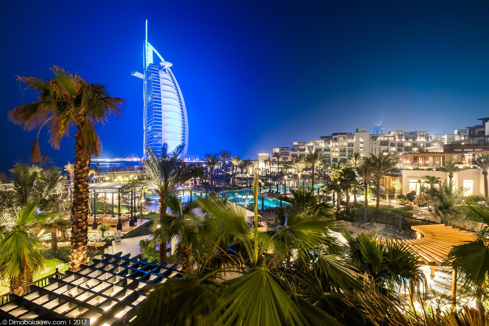
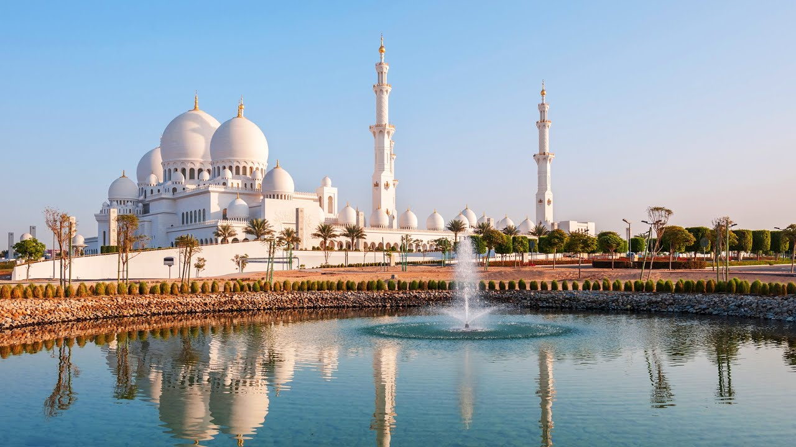
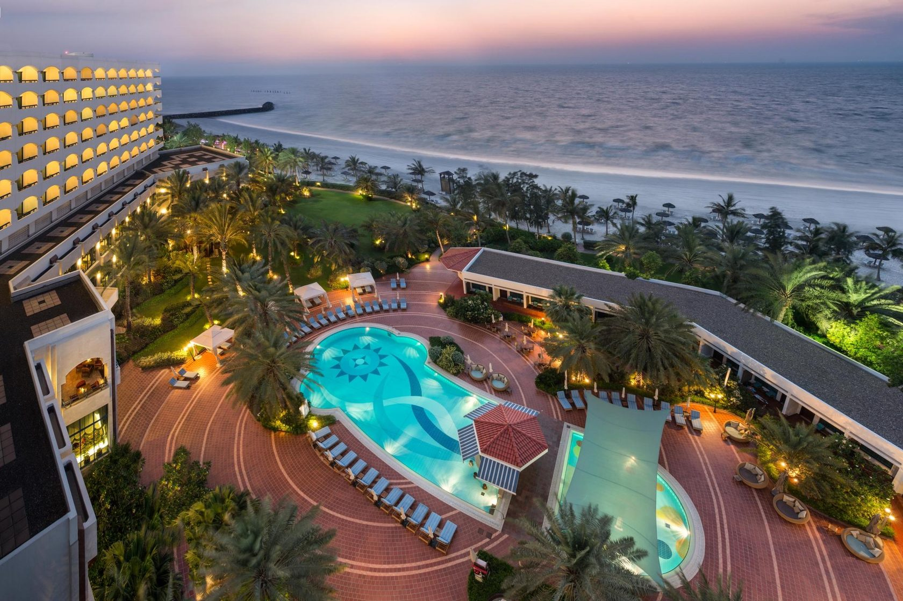
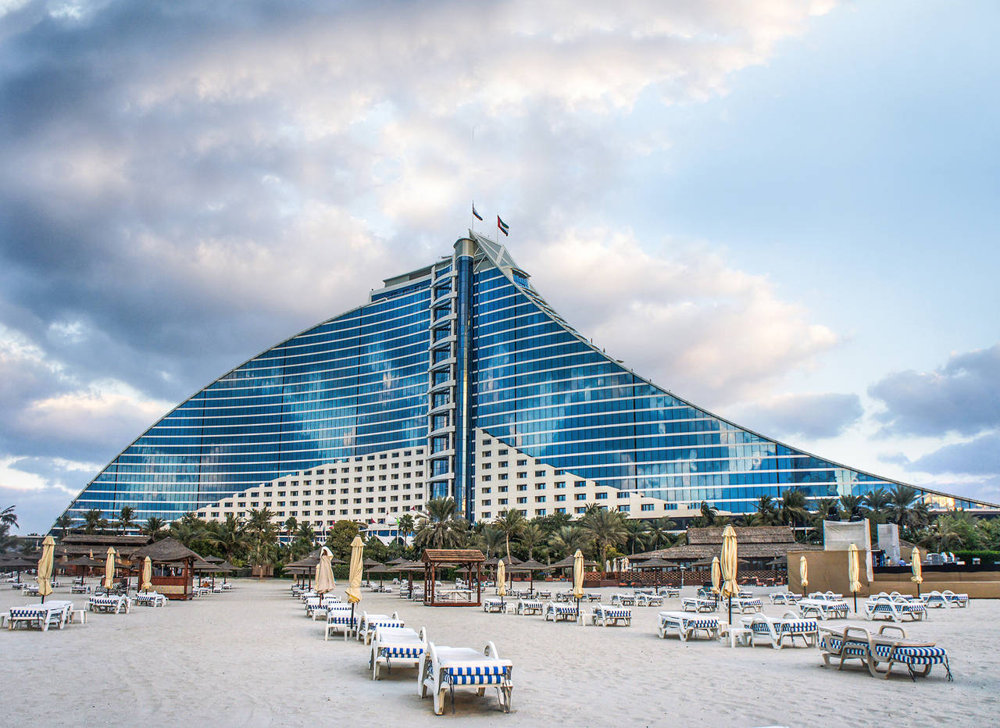
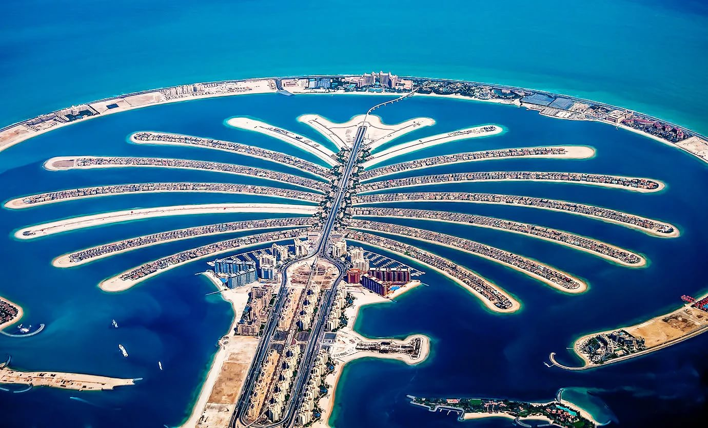
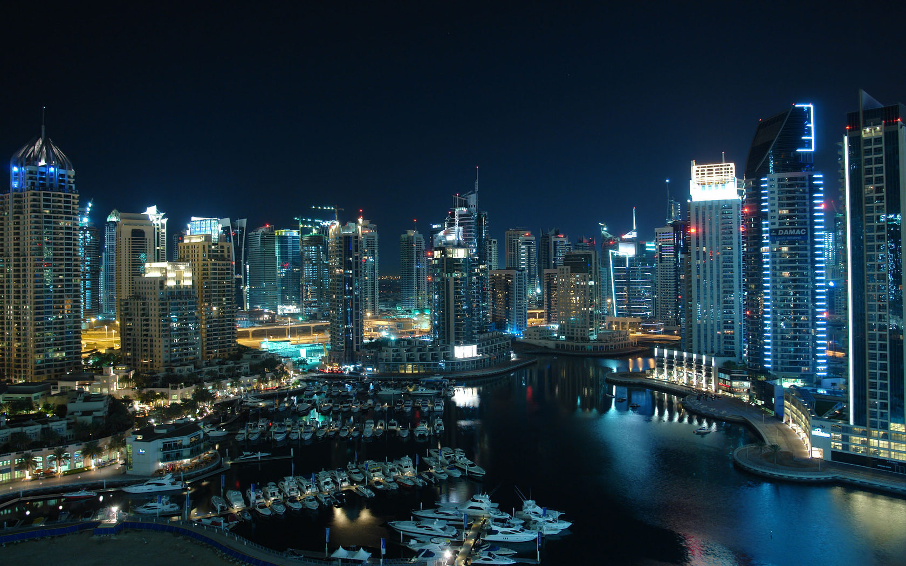
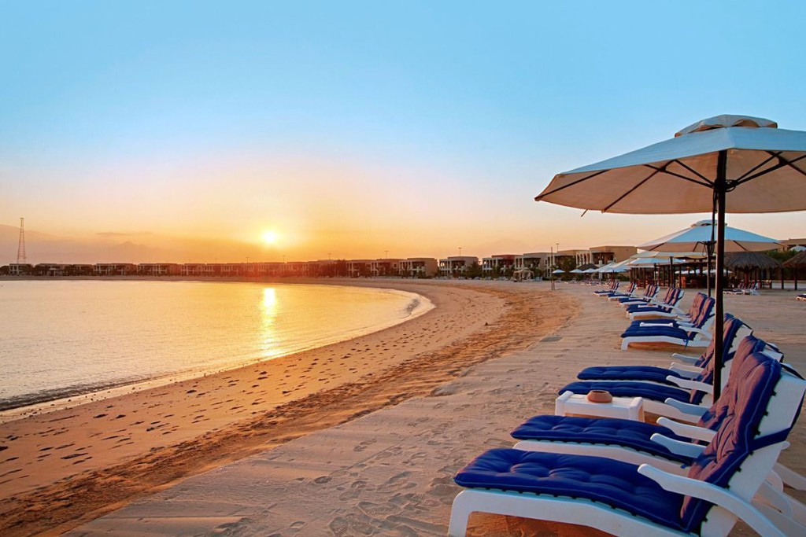
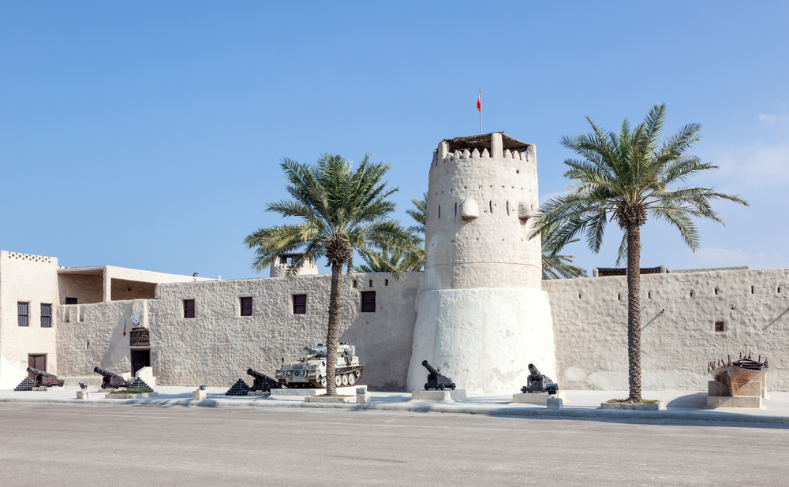
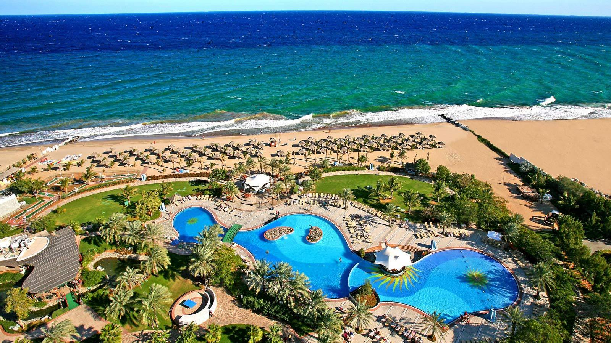

О стране
О стране
ОАЭ - расположены в северо-восточной части Аравийского полуострова и омываются Персидским заливом. Площадь их территории составляет 83,6 км². На юге и западе страна граничит с Саудовской Аравией, на востоке – с Оманом. Северное и западное побережья находятся напротив Ирана и Катара. Государство состоит из семи независимых эмиратов: Абу-Даби, Аджман, Дубай, Рас-Аль-Хайма, Умм-Аль-Кувейн, Фуджейра и Шарджа. Столицей ОАЭ является столица самого крупного эмирата – одноименный город Абу-Даби.
Климат
Климат этой страны определяется как сухой, субтропический и пустынный. Средние температуры в туристический сезон колеблются в пределах от +20 до +35°С, в некоторых районах достигают +48°С. Температуры воды в прибрежных зонах не опускаются ниже +20°С.
Интересные факты
Интересные факты

Большую часть территории Объединенных Арабских Эмиратов занимает пустыня Руб-эль-Хали, и по праву считается самой крупной в мире областью, покрытой песком. Растительность и природное богатство страны, за исключением гористых областей Фуджейры и Рас-Аль-Хаймы, – результат кропотливой рукотворной работы местных жителей. Самые интересные представители местной фауны – аравийский леопард и ибекс, в естественной среде обитания чаще встречаются верблюды и дикие козы.
Объединенные Арабские Эмираты – рай для любителей пляжного отдыха и шоппинга. При этом государство не обделено и историческими достопримечательностями, такими как археологические парки, старинные форты и дворцы шейхов. Архитектура столицы страны Абу-Даби и посещение самого динамичного эмирата Дубай поразит гостей своей урбанизацией и размахом научно-технической мысли.
Современные Объединенные Арабские Эмираты – это множество гостиниц, ресторанов и магазинов, аквапарков, ночных клубов и дискотек, торговых и выставочных центров, экзотических рынков и современных бутиков. Ежегодно сюда приезжают сотни тысяч туристов, чтобы ощутить восточную роскошь, искупаться в теплых водах Персидского залива, понежиться на прекрасных песчаных пляжах и посетить культурно-исторические достопримечательности. Сохранив восточный колорит, Арабские Эмираты сумели не только не отстать от остального мира, но и обойти его по ряду показателей.
Вряд ли кого-то оставят равнодушным зеленые оазисы в пустыне, Зоны Красных Песков (живописные высохшие устья рек) или горный массив Аль-Хаджарс с его остроконечными вершинами. Любители особой экзотики непременно воспользуются возможностью «оторваться» от города и совершат путешествие по пустыне. Отдельного упоминания достойна арабская кухня, без дегустации которой из отелей ОАЭ не уезжает ни один турист.
КУРОРТЫ СТРАНЫ
Абу-Даби

АБУ-ДАБИ Отдых в Абу-Даби – это отдых на песчаных пляжах, омываемых светло-лазурными водами Персидского залива. Курорт непременно оценят любители водных видов спорта. Здесь созданы все условия для занятий дайвингом, серфингом или сноркелингом. Отели Абу-Даби поражают своим восточным колоритом и королевским сервисом, а роскошные рестораны, ночные клубы и торговые центры удовлетворят претензии даже самых искушенных гостей.
Черта, которая отличает Абу-Даби от любого другого современного города и которая отражает его мусульманский характер, – большое количество мечетей. С любой точки города можно увидеть сразу несколько причудливо украшенных минаретов.
Аджман

АДЖМАН
Эмират Аджман находится на побережье Персидского залива, протяженностью 16 км, между Умм-Аль-Кувейном и Шарджой и является самым маленьким из семи эмиратов. Аджман расположен в 30 минутах езды от аэропорта Дубая.
Это небогатый эмират, отельное строительство которого ведется намного медленнее, чем на остальных курортах ОАЭ. Здесь есть торговый район и уютные ресторанчики на центральных улицах. Однако за развлечениями отсюда чаще всего отправляются в Дубай, за шоппингом – в Шарджу.
Белые пляжи этого курорта (на всех остальных курортах ОАЭ песок желтый) притягивают отдыхающих со всего мира. Те, кто устал от быстрого ритма современной жизни, найдут в Аджмане истинное отдохновение от суеты и гомона цивилизации.
Главная достопримечательность Аджмана – музей в старинном форте, который до 1970 года оставался резиденцией правителя княжества. Экспозиция музея включает археологический и этнографический разделы, коллекцию старинного оружия, залы, посвященные истории полиции Эмиратов. Особый интерес вызывает воспроизведение быта прошлого и традиционных ремесел в зале восковых фигур.
Традиционный уклад жизни этого места хорошо уживается с надвигающимся новым миром, полным индустриальных и технологических преобразований. Для любителей экзотики рекомендуем знаменитые верблюжьи бега, устраиваемые в пустынях этого эмирата. Для любителей позагорать и искупаться – великолепные, чистые пляжи Аджмана. Здесь распространены и водные виды спорта, особенно моторизированные. С середины сентября до середины мая на курорте стоит прекрасная погода, теплые солнечные дни сменяются приятными прохладными вечерами. Лучшее время для отдыха с октября по май, когда на смену теплому солнечному дню приходит несущий прохладу вечер.
Аджман привлекает туристов, стремящихся к полному релаксу, к тишине и покою на лоне природы и наслаждению неторопливым течением жизни, свойственным этой стране много веков назад.
Джумейра

ДЖУМЕЙРА
Джумейра – прибрежный жилой и курортный район города Дубай, расположенный на территории второго по величине эмирата ОАЭ. На протяжении своей истории арабы, живущие в Джумейре, занимались рыболовством, промыслом жемчуга и торговлей. В наше время район приобрел особую популярность среди европейских и западных эмигрантов, работающих в эмирате, и стал их основным местом заселения, что повлияло на бурный рост строительства вдоль береговой линии залива Дубай. В Джумейре расположены в основном невысокие частные жилые здания, в том числе дорогие и роскошные особняки, а также скромные городские дома, построенные в разных архитектурных стилях.
Джумейра считается самым фешенебельным районом столицы одноименного эмирата Дубай. Отели Джумейры самые комфортабельные, пляжи – самые чистые, а отдых – самый лучший. Ведь в ОАЭ Джумейра – это эталон отдыха класса «де-люкс». Гладь залива – идеальное место для всех видов водного спорта, будь то серфинг, катание на гидроцикле или на водных лыжах. Море здесь теплое и ласковое, а берег пологий. Вечером в отеле вам обязательно предложат бесплатный трансфер до торговых центров и обратно.
Все отели Джумейры по отзывам российских и европейских туристов отличаются высококлассным сервисом. В ОАЭ, согласно традициям восточного гостеприимства к туристам относятся как к дорогим гостям. Здесь принято представлять максимум услуг, поэтому в отелях Джумейры предусмотрены все услуги, которые когда-либо могут понадобиться отдыхающим.
Пальма Джумейра

ПАЛЬМА ДЖУМЕЙРА
Пальма Джумейра – рукотворный остров в виде финиковой пальмы, который окрестили «восьмым чудом света» у берегов города Дубай. Это, пожалуй, самый амбициозный арабский проект – сеть из трех насыпных искусственных островов (или «пальм»), которые в будущем должны превратиться в пляжный Лас-Вегас, где можно будет отдыхать и тратить деньги круглосуточно и с нешуточным размахом. Райский уголок, маленький эдем для романтиков и чувственных натур. Каждое утро жители и гости Пальма Джумейры встречают потрясающей красоты морской рассвет, чтобы насладиться еще одним днем, проведенным здесь.
Устройство острова напоминает небольшой город. На острове расположены роскошные виллы, утопающие в зелени, удобные апартаменты, яхт-клубы, парки развлечений, отели для туристов, магазины, пляжные клубы. Отдыхающие, желающие отвлечься от городской суматохи, найдут здесь любые развлечения на свой вкус. Подобных проектов в мире еще никогда не было!
Остров полностью защищен от разрушения и оседания, за его целостностью постоянно наблюдает большая команда высококвалифицированных инженеров и водолазов, задача которых отслеживать все изменения, происходящие в подводной части насыпного архипелага, а также вовремя выявлять размывание или нарушение его фундамента.
«Полумесяц» – сооружение, обрамляющее остров со стороны моря, и обеспечивающее его защиту от штормов. Здесь строятся новые, комфортабельные отели, большинство из которых принадлежит известным мировым сетям.
«Крона» состоит из 17 «ветвей», которые исходят из центра «пальмы» в сторону «полумесяца» и являются отдельными районами. На них располагаются эксклюзивные виллы премиум-класса.
«Ствол» – это основание Пальма Джумейры, на нем находятся парки, рестораны, торговые центры. Здесь также построено 20 многоэтажных жилых домов – Shoreline Apartments, из окон которых открывается прекрасный вид на живописный канал и залив.
Для тех, кто ищет развлечения, на острове существует заповедник и современный центр обучения дельфинов Dolphin Bay. В этом дельфинарии, общей площадью в 4,5 га, посетители имеют возможность узнать больше о жизни дельфинов и даже немного поиграть с ними.
Пальма Джумейра входит в число основных туристических достопримечательностей не только в Персидском заливе, но и во всем мире.
Дубай сити

ДУБАЙ СИТИ Дубай – город-мечта для любого человека. Побывав здесь, окунувшись в атмосферу изысканности, насладившись фантастическими видами и познакомившись с достопримечательностями города, турист ни за что не захочет покидать этот рай! Привлекает этот город своими обычаями и законами: политикой свободы от налогов и бюрократизма, которая способствовала стремительному развитию Дубая и превратила его в город-мечту не только для туристов, но и для инженеров-строителей и бизнесменов.
Дубай разделен на три больших района: Джумейра – престижный пляжный район, Дейра – торговый район и залив Крик, а также район Бар-Дубай – деловой и портовый центр.
Когда-то Дубай начинал как экспортер жемчуга, но к XX веку он уже не мог себе позволить так мелочиться. Теперь эмират лидирует по производству золотых украшений, а цены в Дубае на золото таковы, что редкий турист не увезет домой полчемодана изделий из драгметалла. Рынок пряностей поражает даже искушенных туристов разнообразием специй и благовоний и традиционными лекарственными средствами. На других улочках находятся магазины, где продают трубки и кальяны. В пекарнях пресные лепешки выпекают прямо на глазах у покупателя.
Дубай – это одновременно динамично развивающийся международный деловой центр и место спокойного отдыха; это город, где совершенство ХХI века сосуществует с простотой прошлого. Большинство туристов, решивших провести свой отдых в ОАЭ, выбирают именно этот эмират и этот город.
Рас-Аль-Хайма

РАС-АЛЬ-ХАЙМА Рас-Аль-Хайма – место, где богатое историческое наследие, руины и достопримечательности гармонично сочетаются с уникальной топографией. Родники и древние форты, причудливые деревни со смотровыми башнями, красивые пальмовые рощи и живописные холмы, лазурное побережье и пустынные дюны – все это вы найдете в Рас-Эль-Хайме.
Рас-Аль-Хайма – один из красивейших и самых древних эмиратов страны, находящийся на севере Арабских Эмиратов, в часе езды от аэропорта Дубая рядом с проливом Хормуз. Хотя Рас-Аль-Хайма обладает лишь четвертой по размеру площадью среди всех эмиратов ОАЭ, его природа необыкновенно красива и, пожалуй, наиболее разнообразна – впечатляющие пейзажи с песчаными пляжами, горы, пышная растительность, плодородные поля, где произрастает более 45 различных видов финиковых пальм. Есть в Рас-Аль-Хайме и горячие источники. А столица эмирата разделена на две части красивым заливом Аль-Хор.
Две части города соединяет огромный мост, который позволяет спокойно перемещаться жителям города и его гостям по всей территории курорта Рас-Аль-Хайма. Город имеет туристическую зону, где построены отели, магазины, рестораны и прочие развлекательные заведения. Эта зона называется Хаат и имеет на своей территории знаменитые источники минеральных вод, активно используемые для лечения различных заболеваний. Старый город Рас-аль-Хайма – чудесное место для прогулок. Особенно неповторимо очарование старинного рынка.
Рас-Аль-Хайма предоставляет возможность принять участие в двух курсах по 18-луночному гольфу под звездами – в гольф-клубе «Аль Хамра» и в гольф-клубе «Тауэр Линкс». Оба клуба известны своим участием в Региональных чемпионатах по гольфу, проходящих на их территории.
Сафари в пустыне эмирата Рас-Аль-Хайма – это целый день незабываемых впечатлений. Сафари начинается с захватывающей поездки на квадроцикле по пустыне и подъема на песчаные дюны, зачастую под углом в 45 градусов! Верблюжьи бега – часть традиционного культурно-исторического наследия эмирата Рас-Аль-Хайма. Беговая дорожка обычно бывает заполнена пестро украшенными верблюдами-самцами, шествующими взад-вперед, и тренерами верблюдов, готовящих своих подопечных для бегов. Официальные верблюжьи бега проводятся по четвергам во второй половине дня и по пятницам рано утром.
Умм-Аль-Кувейн

УММ-АЛЬ-КУВЕЙН Умм-Аль-Кувейн в переводе означает «источник сил». Этот миниатюрный эмират расположен на небольшом полуострове между Аджманом и Рас-Аль-Хаймой, окруженном множеством маленьких островков. Его площадь около 780 км². Относительная территориальная изолированность позволяет этому эмирату сохранять свои традиции и жизненный уклад на протяжении многих лет.
Умм-Аль-Кувейн разделен на две части. Старый город защищали когда-то внушительные укрепления, о которых сегодня напоминают три высокие сторожевые башни и форт. В здании форта в наши дни разместилась штаб-квартира управления полиции и исторический музей. Старинные кварталы этого района еще помнят времена, когда Умм-Аль-Кувейн был процветающим торговым городом. Новый город расположился на побережье в 10 км от старой части. Здесь строятся жилые районы и богатые виллы, правительственные здания и деловые офисы.
Через пролив от Старого города находится заповедный остров Аль Синийя – птичий заповедник. Археологи из Англии, Франции, Бельгии и Дании обнаружили здесь руины двух древних городов, носящих название Ад Дур и Телль Абрак, возраст которых составляет более двух тысяч лет.
В Умм-Аль-Кувейне созданы все условия для туризма и занятий спортом. Прекрасные пляжи, лагуны, проходящие здесь верблюжьи бега, памятники истории и архитектуры, – все это привлекает сюда туристов со всего мира.
Фуджейра

ФУДЖЕЙРА Город Фуджейра многие именуют не иначе, как «жемчужина» арабского мира. Здесь любители спокойного времяпрепровождения могут целыми днями «валяться» на теплых пляжах и купаться в чистейших водах Оманского залива, поклонники интеллектуального отдыха – любоваться обилием достопримечательностей, а поклонники спортивного образа жизни найдут массу развлечений на воде. Кстати, сами арабы выбирают в качестве места для отдыха именно Фуджейру, ведь это поистине райское местечко.
Эмират славится своими ландшафтами и богатой живой природой: песчаные пляжи, простирающиеся по всей территории и омываемые Индийским океаном, возвышающиеся скалистые горы Хаджар, расщепленные долинами, которые спускаются к морю и небольшие пальмовые рощи. Несмотря на то, что на курорт съезжаются дайверы со всего мира, Фуджейра – тихое и спокойное место, куда направляются семьями и с друзьями, чтобы вволю насладиться ленивым пляжным отдыхом. А песчаные пляжи в Фуджейре действительно роскошные: чистые, ухоженные, изрезанные уютными бухточками для уединенного отдыха. Обрамленные изумрудной зеленью парков, аллей, скверов, пляжи Фуджеры всегда свободны – толчея и столпотворение отдыхающих редкость для курорта.
Выбирать отдых в Фуджейре стоит семьям с детьми – просторные пляжи на берегу Индийского Океана, анимация в отелях, отличное питание, а также туристам, любящим дайвинг и сноркелинг – затонувшие корабли, скопления твердых кораллов в окрестных водах Диббы, множество черепах и других морских обитателей. На побережье Фуджейры открыты два международных дайвинг-центра и морской клуб.
В свободное время обязательно стоит посетить «пятничный рынок», который в Фуджейре отличается удивительным даже для восточного базара разнообразием. Здесь можно купить действительно все, от антикварной мебели до экзотических животных. Присмотритесь на рынке к коврам – в Фуджейре отели украшаются именно местными коврами, которые славятся на все ОАЭ качеством и богатством орнамента. На «пятничном рынке» шелковый или хлопковый ковер ручной работы, умело торгуясь, можно купить очень недорого!